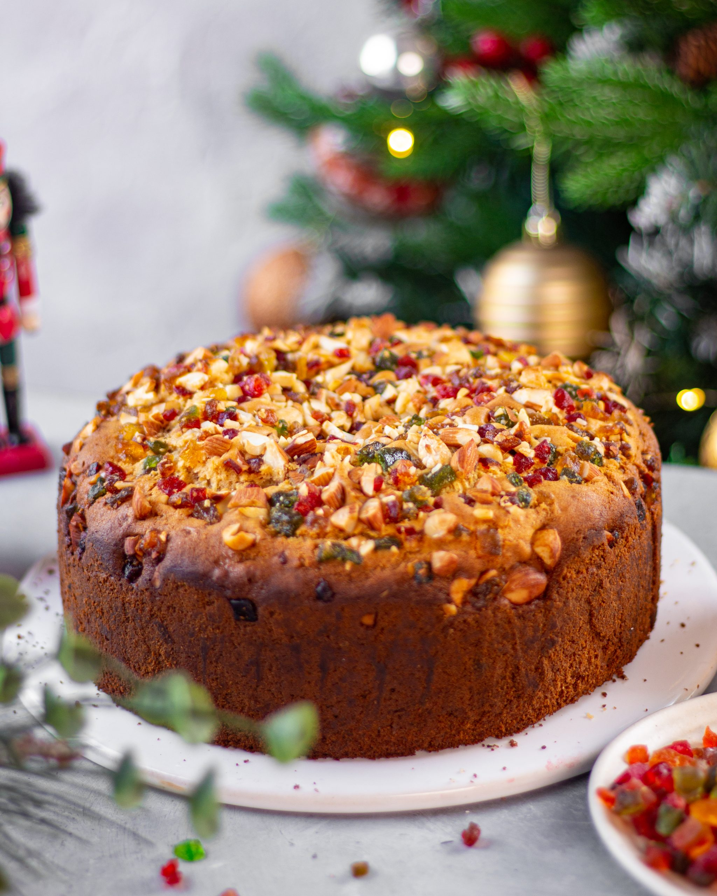

P.S. This cake is very dense due to amount of dry fruits used in it.
Ingredients

1 cup (125 g) maida (all-purpose flour)
1/2 cup (100 g) + 1/4 cup (50 g) sugar
7 tbsp (100 g) butter
3/4 cup fresh orange juice
1/2 tsp vanilla extract
1/2 tsp baking powder
1 tsp baking soda
2 tsp orange marmalade (or any mixed fruit jam)
1/4 tsp salt
Spice Powder:
2" cinnamon stick
4 green cardamoms
5 cloves powdered
Dry fruits:
1/3 cup (50 g) raisins
1/4 cup (50 g) chopped prunes
1/2 cup (50 g) chopped pecans
1/2 cup (50 g) chopped cashews
1/2 cup (100 g) tutti frutti (candied fruits)
Instructions
Preheat the oven at 350 degrees Fahrenheit for 10 minutes.
Put all the dry fruits in a bowl, and melt the butter and add it to the fruits; mix well.
Heat 1/2 cup sugar with 1 tbsp water in a thick bottomed pan till it becomes dark brown in color (If you burn thin, the cake becomes bitter, so be careful).
Add this to the fruits and mix well; when it is cooled a bit, add the jam, orange juice, 1/4 cup sugar, salt, spice mixture, and vanilla.
Serve together flour, baking powder, and baking soda; add these dry ingredients to the fruit mixture a little at a time, mixing with a spoon.
Grease a baking dish and pour the batter into it; bake it at 350 degrees Fahrenheit for about 25-30 minutes, or till a knife inserted in the center comes out clean.
Wait till it cools down to room temperature and then cut it (If you cut before it cools it will crumble).